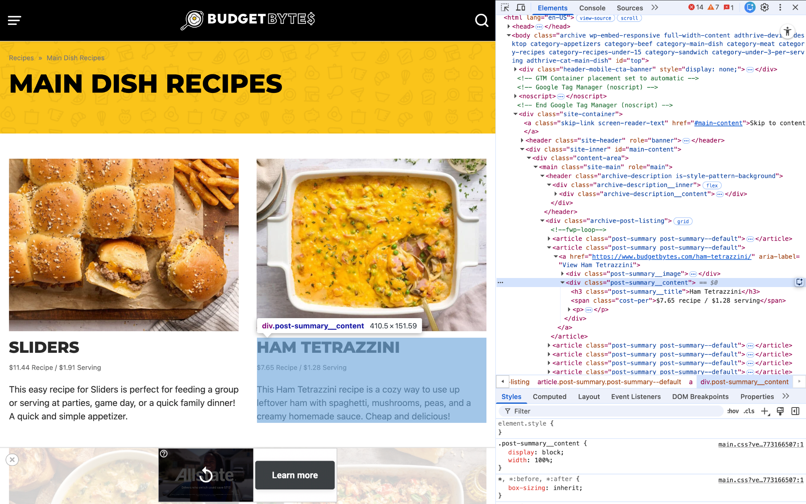

Budget Bytes Recipes: A Data Acquisition Project
Introduction
If you’ve ever planned meals or cooked regularly, you know how time consuming and expensive it can feel. Budgeting, grocery shopping, and preparing meals can quickly become overwhelming. As a wife, student, and part-time working mom, I’m especially interested in meals that are inexpensive, easy, and quick to prepare.
To better understand what makes a meal both affordable and quick to prepare, I gathered data on recipes from the popular food blog, Budget Bytes, which specializes in affordable meals. My goal was to create a dataset that could answer questions like:
- What is the typical time and cost to prepare a meal? How do these vary across different recipes?
- Which type of meal is usually quickest to prepare?
- Which type of meal is usually the least expensive?
- Are cheaper recipes also quicker to prepare?
Responsible Scraping
All recipe pages on Budget Bytes are publicly accessible and do not require users to log in. Because the data is openly available and intended for public viewing, collecting summary information such as recipe names, preparation times, and costs is considered within acceptable web scraping practice.
Before collecting data, I reviewed the website’s robots.txt file to confirm that automated access to recipe pages was not restricted. The file mainly blocks administrative and login pages but does not restrict access to public recipe listings.
To avoid overwhelming the website’s server, I added short delays between requests using the time.sleep() function to mimic normal browsing behavior. I also included a user-agent header in my requests so the server could identify the type of client making the request.
How the Data Was Collected
To collect the recipe data, I followed a few main steps.
First, I used Python’s requests library to access the recipe listing pages from Budget Bytes. I included request headers and confirmed that the server returned a successful status code. After successfully accessing the page via requests, I parsed the page content using BeautifulSoup to make the HTML more readable and navigable.

Next, I inspected the HTML of the recipe listing page to identify the elements that contained the information I wanted, such as recipe titles, cost information, and links to the full recipe pages. Using BeautifulSoup’s find_all() function, I extracted these elements from each recipe tile. The extracted values were stored in a list of dictionaries (rows), where each dictionary represented a single recipe.
To gather more recipes, I extended this process across multiple pages of the website. I identified the URL pattern used for pagination and created a loop that iterated through multiple pages of the recipe listings. Within this loop, each recipe page was accessed and the relevant information was extracted and added to rows. Short delays using time.sleep() were included to space out requests and avoid overwhelming the server.
Finally, the collected list of recipe dictionaries was converted into a Pandas DataFrame. This allowed the data to be cleaned and prepared for further analysis.
Using this process, I was able to construct a dataset of 357 recipes from Budget Bytes for exploratory analysis.
Overview of the Data
The final dataset contains 357 recipes and 7 variables describing recipe name, total cost, cost per serving, number of servings, preparation time, cook time, and total time. The variables are defined below.
Data Dictionary
| Variable | Type | Units | Description |
|---|---|---|---|
| title | string | — | Full recipe title as found on Budget Bytes |
| cost | float | USD | Total cost of ingredients for the recipe |
| cost_per_serving | float | USD | Cost of ingredients per serving |
| servings | integer | — | Number of servings listed in the recipe |
| prep_time | integer | minutes | Time required for preparation |
| cook_time | integer | minutes | Cooking time |
| total_time | integer | minutes | Prep time + cook time |
Cleaning the Data
After the initial scraping process, the dataset contained 357 rows and 5 variables: recipe title, cost (containing both total and per serving), preparation time, cook time, and servings. Several cleaning steps were then applied to prepare the data for analysis.
First, I checked for duplicate recipes using the recipe title as a unique identifier. Although recipes were scraped from multiple pages, no duplicate titles were found in the dataset.
Next, the cost information was separated into two variables: total recipe cost and cost per serving. These values were originally stored in the same string and were split into separate columns so that they could be analyzed independently.
Because the scraped values were stored as text (for example “$7.65 recipe” or “15 minutes”), regular expressions were used to extract the numeric portions of each variable and convert them into numeric data types.
Some recipes naturally did not include preparation time or cook time. These missing values were replaced with 0 so that total cooking time could still be calculated. Finally, a new variable, total time, was created by adding preparation time and cook time together.
Limitations of the Data
A limitation of the data is that it only includes recipes from the first 30 pages of the Budget Bytes main dish category. While this is a substantial number of recipes, it may not be fully representative of all the main dish recipes available on the site.
A further limitation is that the cost information listed on the Budget Bytes website may not reflect actual costs for all users. Ingredient prices can vary widely, so the cost data should be interpreted as an estimate rather than an exact figure.
The data also does not include information about the ingredients, which could be relevant for understanding factors that contribute to cost and preparation time. This limits the ability to analyze how specific ingredients or types of meals impact affordability and preparation time.
Finally, the data is based on recipes that are designed to be budget-friendly, which could limit the applicability and generalizability to other recipes or meal planning resources.
Exploratory Analysis
My exploratory analysis of the data revealed some interesting insights about the recipes on Budget Bytes.
- The average total recipe cost was $9.37, with the average cost per serving being $1.90.
- The average total cooking time (prep + cook) was 38 minutes.
- There was little to no correlation between cost and total time, suggesting that cheaper recipes are not necessarily quicker to prepare.
- Comparing chicken and beef recipes, chicken recipes were generally cheaper overall, while beef recipes were slightly quicker to prepare and had a slightly lower cost per serving.
Conclusion and Next Steps
This project demonstrates how web scraping can be used to gather data for analysis when the data is not readily available in a structured format. By collecting and cleaning recipe data from Budget Bytes, I was able to create a dataset that can be used to explore questions about meal affordability and preparation time.
You can do this too! Try scraping a site with multiple pages even! If you have a website in mind that contains data you want to analyze, you can use the web scraping techniques discussed in this blog to gather that data and create your own dataset. Just remember to always be respectful and responsible when scraping data. Happy scraping!
Further Information and Resources
To check out the code used to scrape and clean the data, see my GitHub repository. There you can also find the final dataset in csv format and a Jupyter notebook with some exploratory analysis of the data.
To learn more about web scraping and data acquisition, check out the following resources:
To dive deeper into multiple page scraping, check out this tutorial: